Erzeuge zwei Bilder im Format 16x9 mit deiner Kamera oder deinem Handy (960x540 Pixel),
davon eines mit eher flächigen Inhalten (Gang/Decke/Wand/Schrank) und eines mit feineren
Strukturen (Natur) und achte auf gute Belichtung. Typischerweise werden diese Bilder im
komprimierten JPG-Format abgespeichert sein. Um sie weiter verarbeiten zu können, müssen
sie zunächst in Paint editiert werden. Es kann auch sein, dass die Kamera eine andere
Auflösung hat, so dass man die Dimensionen noch verändern muss. Speichere deine Bilder
aus Paint im BMP-Format ab. In den folgenden Übungen wirst du diese Dateien oft als
Ursprungsbilder verwenden. Nun lies die Bilder mit einem Matlab-Skript ein und gib die
wichtigsten Headerangaben wie Höhe und Breite aus. Die Matlab-Bildlese- und schreibroutinen
sind imread und imwrite.
| Pflanze | Wand |
|---|---|
| 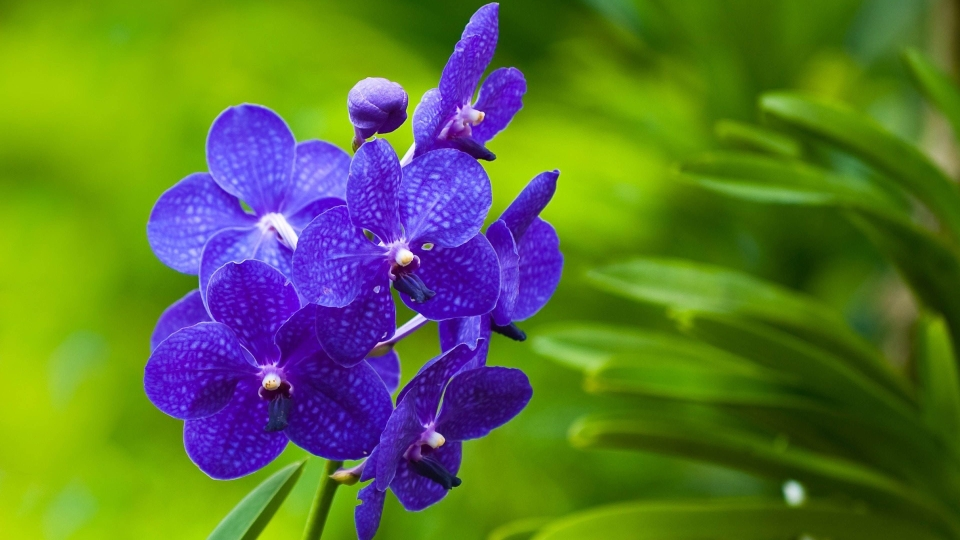 | 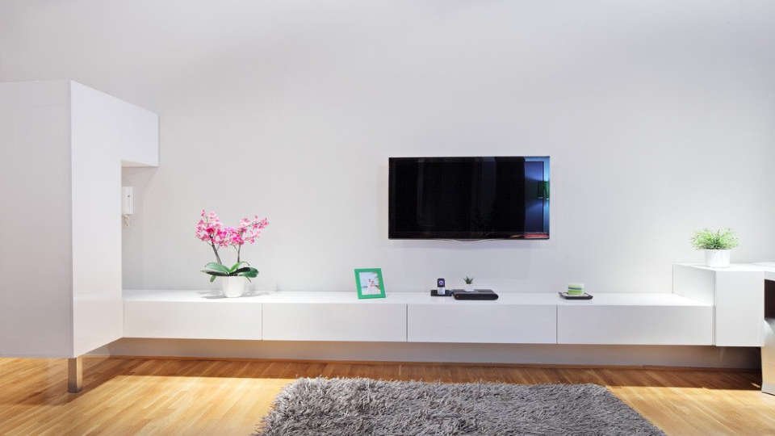 |
Matlab code:
clc
clear workspace
close all
pathPflanze = 'images\pflanze_original.bmp';
pathWand = 'images\wand_original.bmp';
imagePflanze = imread(pathPflanze);
imageWand = imread(pathWand);
infoPflanze = imfinfo(pathPflanze);
infoWand = imfinfo(pathWand);
strcat("Pflanze : " + infoPflanze.Width + "x" + infoPflanze.Height)
strcat("Wand : " + infoWand.Width + "x" + infoWand.Height)
Ausgabe:
ans =
"Pflanze : 960x540"
ans =
"Wand : 960x540"
Modifiziere dein Skript zunächst so, dass du aus deinen Farbbildern Rot- Grün- und Blaukanal separat darstellen kannst.
Matlab code:
clc
clear workspace
close all
pathPflanze = 'images\pflanze_original.bmp';
pathWand = 'images\wand_original.bmp';
imagePflanze = imread(pathPflanze);
imageWand = imread(pathWand);
red_comp_pflanze = imagePflanze;
red_comp_pflanze(:,:,2) = 0;
red_comp_pflanze(:,:,3) = 0;
imwrite(red_comp_pflanze, 'result\red_comp_pflanze.bmp');
green_comp_pflanze = imagePflanze;
green_comp_pflanze(:,:,1) = 0;
green_comp_pflanze(:,:,3) = 0;
imwrite(green_comp_pflanze, 'result\green_comp_pflanze.bmp');
blue_comp_pflanze = imagePflanze;
blue_comp_pflanze(:,:,1) = 0;
blue_comp_pflanze(:,:,2) = 0;
imwrite(blue_comp_pflanze, 'result\blue_comp_pflanze.bmp');
red_comp_wand = imageWand;
red_comp_wand(:,:,2) = 0;
red_comp_wand(:,:,3) = 0;
imwrite(red_comp_wand, 'result\red_comp_wand.bmp');
green_comp_wand = imageWand;
green_comp_wand(:,:,1) = 0;
green_comp_wand(:,:,3) = 0;
imwrite(green_comp_wand, 'result\green_comp_wand.bmp');
blue_comp_wand = imageWand;
blue_comp_wand(:,:,1) = 0;
blue_comp_wand(:,:,2) = 0;
imwrite(blue_comp_wand, 'result\blue_comp_wand.bmp');
figure
subplot(2,2,1);
imshow(imagePflanze);
title('Original');
subplot(2,2,2);
imshow(red_comp_pflanze);
title('Rot-Komponente');
subplot(2,2,3);
imshow(green_comp_pflanze);
title('Grün-Komponente');
subplot(2,2,4);
imshow(blue_comp_pflanze);
title('Blau-Komponente');
figure
subplot(2,2,1);
imshow(imageWand);
title('Original');
subplot(2,2,2);
imshow(red_comp_wand);
title('Rot-Komponente');
subplot(2,2,3);
imshow(green_comp_wand);
title('Grün-Komponente');
subplot(2,2,4);
imshow(blue_comp_wand);
title('Blau-Komponente');
fram1 = imagePflanze(:, :, 1);
fram2 = imagePflanze(:, :, 2);
fram3 = imagePflanze(:, :, 3);
fram4 = imageWand(:, :, 1);
fram5 = imageWand(:, :, 2);
fram6 = imageWand(:, :, 3);
imwrite(fram1, 'result\pflanze_red_Channel.bmp');
imwrite(fram2, 'result\pflanze_green_Channel.bmp');
imwrite(fram3, 'result\pflanze_blue_Channel.bmp');
imwrite(fram4, 'result\wand_red_Channel.bmp');
imwrite(fram5, 'result\wand_green_Channel.bmp');
imwrite(fram6, 'result\wand_blue_Channel.bmp');
figure
subplot(2,2,1);
imshow(imagePflanze);
title('Original');
subplot(2,2,2);
imshow(fram1);
title('Rot-Kanal');
subplot(2,2,3);
imshow(fram2);
title('Grün-Kanal');
subplot(2,2,4);
imshow(fram3);
title('Blau-Kanal');
figure
subplot(2,2,1);
imshow(imageWand);
title('Original');
subplot(2,2,2);
imshow(fram4);
title('Rot-Kanal');
subplot(2,2,3);
imshow(fram5);
title('Grün-Kanal');
subplot(2,2,4);
imshow(fram6);
title('Blau-Kanal');
| Farbe | Pflanze | Wand |
|---|---|---|
| Rot | 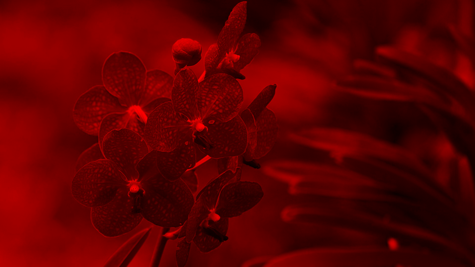 | 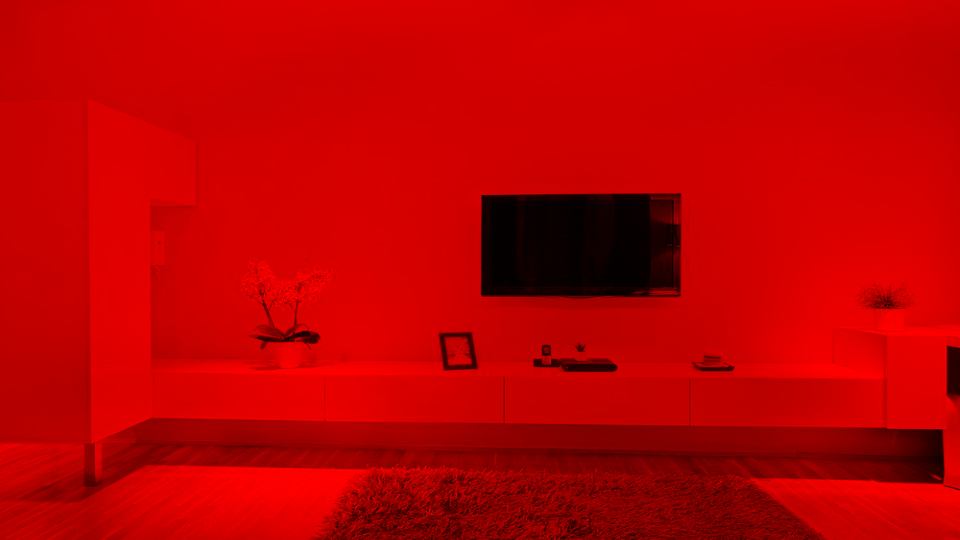 |
| Grün | 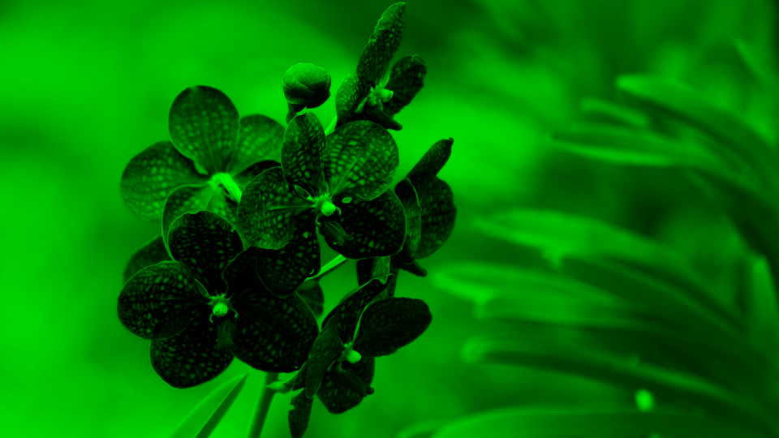 | 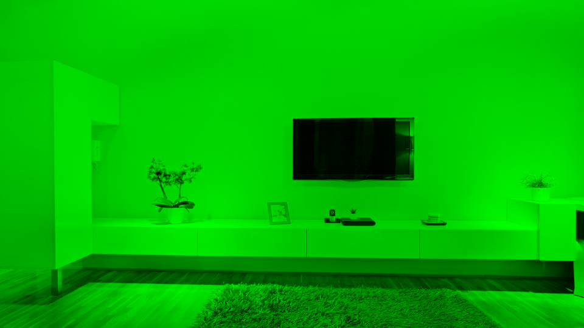 |
| Blau | 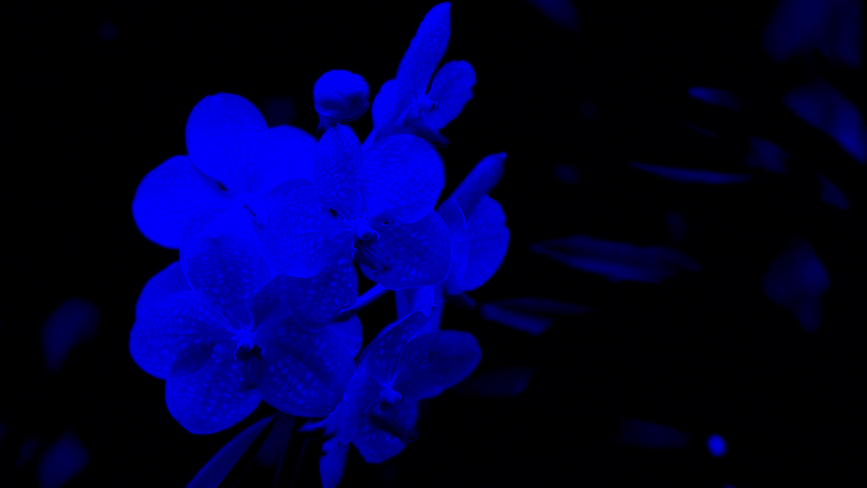 | 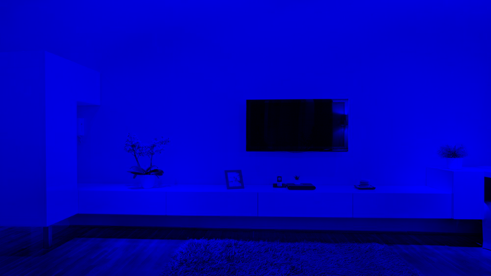 |
Nun erzeuge Graustufengrafiken aus deinen Farbbildern und speichere sie wieder ab.
Recherchiere, welche Ansätze es dazu gibt und implementiere zwei davon.
Matlab code:
clc
clear workspace
close all
pathPflanze = 'images\pflanze_original.bmp';
pathWand = 'images\wand_original.bmp';
imagePflanze = imread(pathPflanze);
imageWand = imread(pathWand);
gray_img = rgb2gray(imagePflanze);
imwrite(gray_img, 'result\gray_img_pflanze.bmp');
gray_img2 = rgb2gray(imageWand);
imwrite(gray_img2, 'result\gray_img_wand.bmp');
figure
subplot(2,2,1);
imshow(imagePflanze);
title('Pflanze Farbe');
subplot(2,2,3);
imshow(gray_img);
title('grayScale of Pflanze');
subplot(2,2,2);
imshow(imageWand);
title('Wand Farbe');
subplot(2,2,4);
imshow(gray_img2);
title('grayScale of Wand');
| Pflanze | Wand |
|---|---|
| 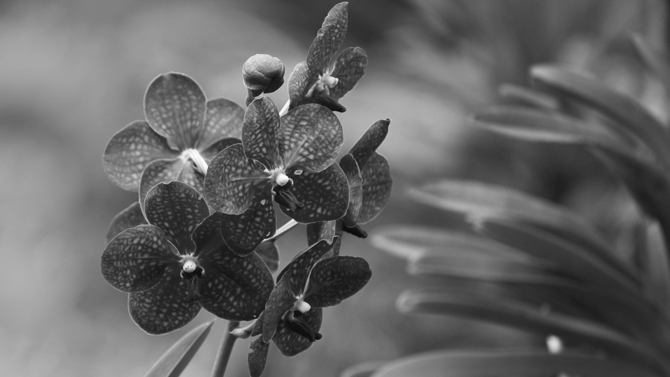 |
Nun spalte die Farbbilder in Luminanz- und Chrominanzanteile auf. Verwende hierzu das Farbmodell YCrCb.
Matlab code:
clc
clear workspace
close all
pathPflanze = 'images\pflanze_original.bmp';
pathWand = 'images\wand_original.bmp';
imagePflanze = imread(pathPflanze);
imageWand = imread(pathWand);
run(pathPflanze, imagePflanze, 'pflanze');
run(pathWand, imageWand, 'wand');
function run(path, image, file)
ti=size(image);
figure
imshow(image);
title(['Orginales Bild : ',path])
xlabel(['Bildauflösung : ',num2str(ti(2)),'x',num2str(ti(1))])
R=image(:,:,1);
G=image(:,:,2);
B=image(:,:,3);
nullen=zeros(ti,'uint8');
img_R=nullen;
img_G=nullen;
img_B=nullen;
img_Y=nullen;
img_Cb=nullen;
img_Cr=nullen;
img_R(:,:,1)=R;
img_G(:,:,2)=G;
img_B(:,:,3)=B;
Y = 0.299*R+0.587*G+0.114*B;
Cb= -0.1687*R-0.3313*G+0.5*B+128;
Cr = 0.5*R-0.4187*G-0.0813*B+128;
figure
subplot(131)
imshow(img_R)
title('Komponente R')
subplot(132)
imshow(img_G)
title('Komponente G')
subplot(133)
imshow(img_B)
title('Komponente B')
img_Y(:,:,1)=Y;
img_Y(:,:,2)=Y;
img_Y(:,:,3)=Y;
name = strcat('result\y_',file,'.bmp');
imwrite(img_Y, name);
figure
imshow(img_Y);
title('Luminanz Y')
img_Cb(:,:,1)=Y;
img_Cb(:,:,2)=Y;
img_Cb(:,:,3)=Y;
img_Cb(:,:,1)=1.402*(-128);
img_Cb(:,:,2)=-0.34414*(Cb-128)-0.71414*(-128);
img_Cb(:,:,3)=1.772*(Cb-128);
name = strcat('result\cb_',file,'.bmp');
imwrite(img_Cb, name);
figure
imshow(img_Cb);
title('Chrominance blau(Cb)')
img_Cr(:,:,1)=1.402*(Cr-128);
img_Cr(:,:,2)=-0.34414*(-128)-0.71414*(Cr-128);
img_Cr(:,:,3)=1.772*(-128);
name = strcat('result\cr_',file,'.bmp');
imwrite(img_Cr, name);
figure
imshow(img_Cr);
title('Chrominanz rot (Cr)')
end
| Luminanz | Pflanze | Wand |
|---|---|---|
| Y | 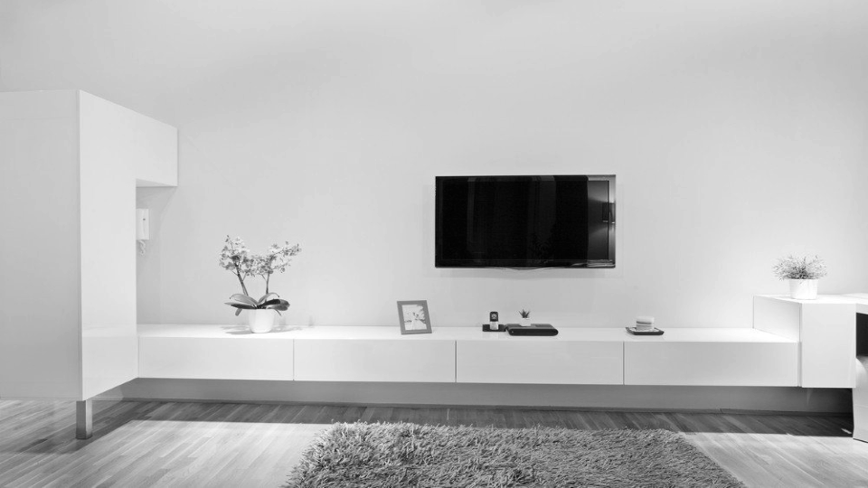 |
| Chrominanz | Pflanze | Wand |
|---|---|---|
| Cr | 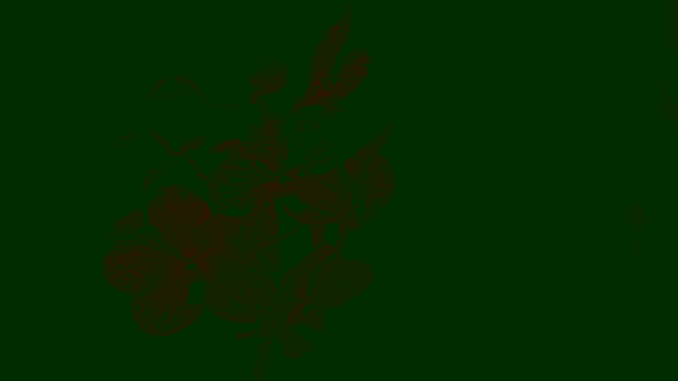 | 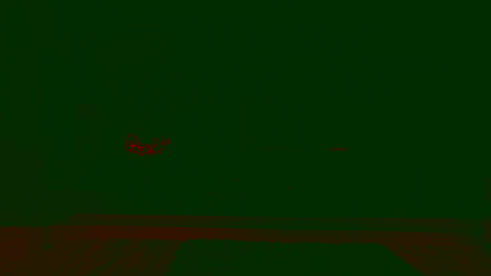 |
| Cb | 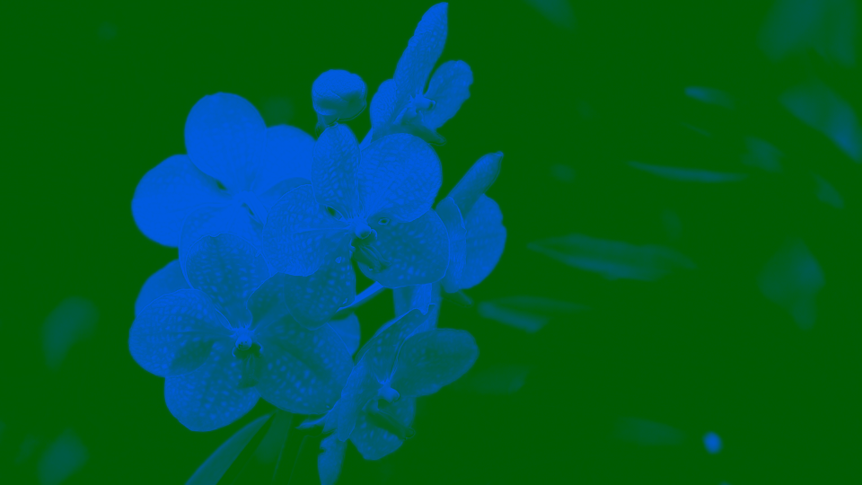 | 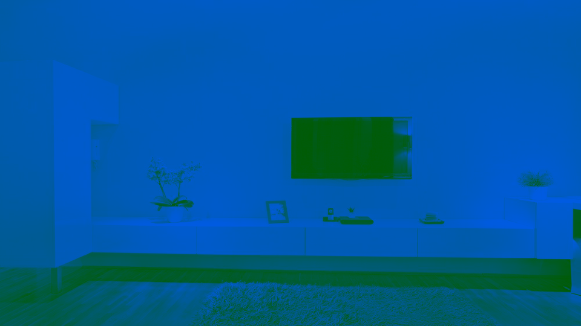 |
Abschließend verwendest du das Modell XYZ, das dem CIE-Farbmodell zu Grunde liegt.
Matlab code:
clc
clear workspace
close all
pathPflanze = 'images\pflanze_original.bmp';
pathWand = 'images\wand_original.bmp';
imagePflanze = imread(pathPflanze);
imageWand = imread(pathWand);
run(imagePflanze, 'pflanze');
run(imageWand, 'wand');
function run(image, file)
XYZ = rgb2xyz(image);
figure
subplot(1,2,1);
imshow(image);
title('Bild im RGB Farbraum');
subplot(1,2,2);
imshow(XYZ);
name = strcat('result\xyz_',file,'.bmp');
imwrite(XYZ, name);
title('Bild im XYZ Farbraum');
end
| Farbraum | Pflanze | Wand |
|---|---|---|
| RGB | ||
| XYZ | 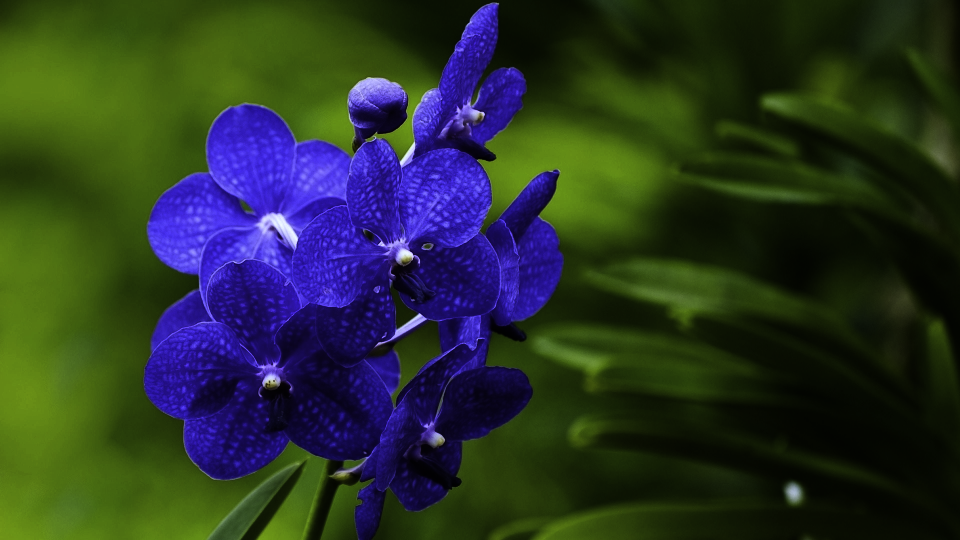 | 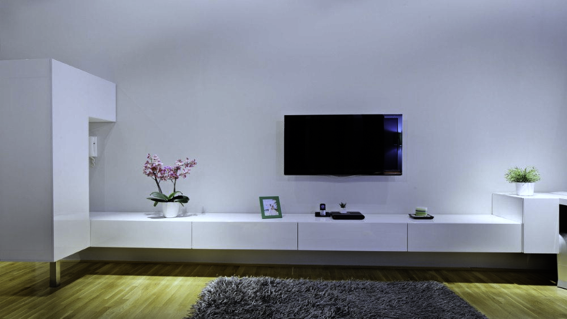 |
Als nächstes erzeugen wir aus unseren Graustufengrafiken Histogramme, d.h. wir zählen die
Häufigkeit jeder Helligkeitsstufe und erzeugen mit plot Abbildungen. Interpretiere den
Verlauf des Histogramms unter Betrachtung deiner Bilder.
Matlab code:
clc
clear workspace
close all
pathPflanze = 'result\gray_img_pflanze.bmp';
pathWand = 'result\gray_img_wand.bmp';
imagePflanze = imread(pathPflanze);
imageWand = imread(pathWand);
figure;
subplot(1,2,1);
imhist(imagePflanze);
axis ([0 255 0 10000]);
title("Graustufen Hist Wand");
subplot(1,2,2);
imhist(imageWand);
axis ([0 255 0 20000]);
title("Graustufen Hist Pflanze");
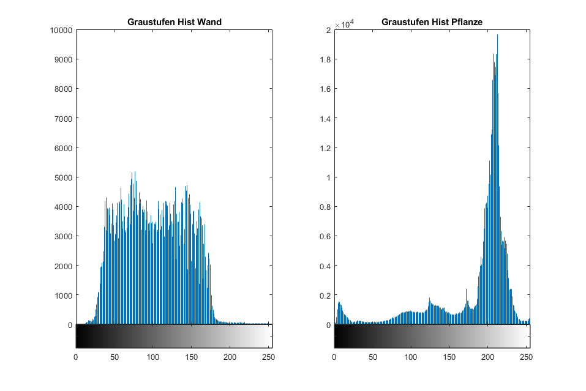
Unter Zuhilfenahme der Bilder ist anhand der Histogramme deutlich zu erkenne, wie die Verteilung der Helligkeitswerte sind. Da das Graustufenbild mit der Pflanze einen geringen Weisanteil besitzt und die Farbwerte relativ gleichmäßig verteilt sind tendieren die Graustufenwerte eher konstant über das Diagramm zu sein. Im Gegenzug ist bei dem Bild mit dem Möbelstück, sehr viel Weisanteil vorhanden und deshalb die Graustufenwerte eher nach rechts ausfallen.
a) Berechne die mittlere Helligkeit der beiden Bildaufnahmen. Lies dazu die Bilder ein und berechne aus denRGB
Farbwerten wieder den Luminanzwert Y, um einen Wert für die Helligkeit zu bekommen. Die mittlereHelligkeit ist
die Summe aller errechneten Helligkeitswerte geteilt durch die Anzahl der Bildpunkte. Berechneauch den Kontrast
für das Bild, d.h. die Standardabweichung der Helligkeit.
b) Verändere eure Graubilder in der Helligkeit durch Subtrahieren bzw. Addieren eines konstanten Werts (20+/-
Schrittweite) bis zur minimalen (dunkel) und maximalen (hell) Helligkeit, d.h. so dass das jeweilige Motivgerade
noch zu erkennen ist. Beachte dabei, dass ihr beim Ergebnis der Pixelwertberechnung im 8-Bit-Bereich bleibt.
Berechne die Histogramme für +/-40.
c) Erhöhe und verringere den Kontrast durch Multiplikation mit den Faktoren k, so dass das veränderte Bildgerade
noch sichtbar bleibt (0,2 Schrittweite). Berechne auch das Histogramm für k=0,6 und k=1,4 undvergleiche mit
denen der Helligkeitsänderung. Was haben Helligkeits- und Kontraständerung für eine
Auswirkung auf das Histogramm?
Matlab code:
clc
clear workspace
close all
pathPflanze = 'images\pflanze_original.bmp';
pathWand = 'images\wand_original.bmp';
imagePflanze = imread(pathPflanze);
imageWand = imread(pathWand);
run(imagePflanze);
run(imageWand);
function run(image)
ti=size(image);
R=image(:,:,1);
G=image(:,:,2);
B=image(:,:,3);
nullen=zeros(ti,'uint8');
img_R=nullen;
img_G=nullen;
img_B=nullen;
img_Y=nullen;
img_Cb=nullen;
img_Cr=nullen;
img_R(:,:,1)=R;
img_G(:,:,2)=G;
img_B(:,:,3)=B;
Y = 0.299*R+0.587*G+0.114*B;
Cb= -0.1687*R-0.3313*G+0.5*B+128;
Cr = 0.5*R-0.4187*G-0.0813*B+128;
img_Y(:,:,1)=Y;
img_Y(:,:,2)=Y;
img_Y(:,:,3)=Y;
figure
imshow(img_Y);
title('Luminanz Y')
img_Cb(:,:,1)=Y;
img_Cb(:,:,2)=Y;
img_Cb(:,:,3)=Y;
end
| Luminanz | Pflanze | Wand |
|---|---|---|
| Y | 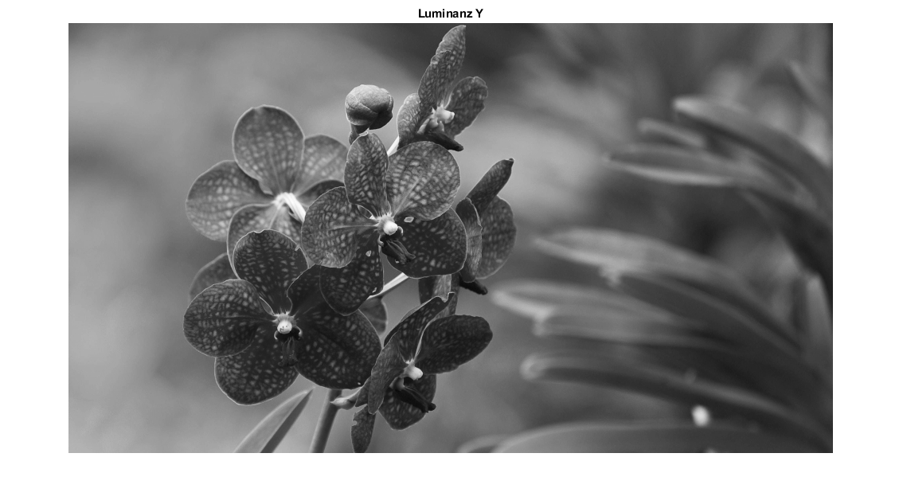 | 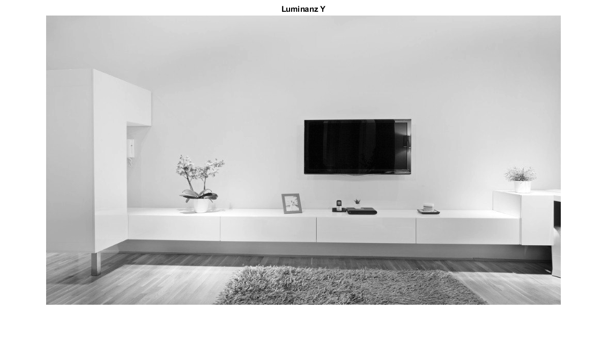 |